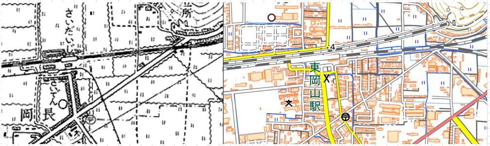

2021（R3）年 4月30日～5月1日 高松出張 まよい旅③
いよいよ本稼働を迎える高松のユーザに、久々に行ってきました。
今回は、船で高松に渡ろうと思います。
赤穂線との分岐駅の東岡山駅でちょっと降りてみま
した。

実はこの駅、昔は「西大寺駅」でした。そしてこの駅前広場には、西大寺鉄道の財田駅がありました。
行ってみたかったなぁ。
現、西大寺駅に到着。１１７系がお出迎え。
駅前からバスに乗って、東宝伝というところにやっ
てきました。
このあたりから船が出てると聞いたんやけど・・・
どうも、港はもうちょっと西みたいです。
港まで歩いて行きます。
見えてる島は、犬島かな。

このあたりのようです。
高松行は見当たらんど。
しゃーない、犬島まで行ってみるか。
宝伝港出航。けっこう観光客乗ってます。
犬島到着。のどかないい港です。
しゃれた建物も建ってます。観光案内所みたいで
すね。

しばし島内散策。「公衆電話室」って！
ここ犬島は、昔、銅の精錬所があって、その跡地を観光資源にしてそこそこ人気のスポットになってるみたいです。
散策してたら、昔精錬所で働いてたというおばあさんが話しかけてきたんやけど、船の時間もあったので冷たくあしらって
しまって申し訳ないことしたわ。寅さんへの道は、ハルカ遠くにあるなぁ。
犬島からは、豊島経由で直島に行く船便があったの
で、これに乗り込みます。
ちなみに、高い煙突が製錬所の名残です。
豊島の港です。
直島の宮浦港が見えてきました。
高速船やったけど、やっぱフェリーでのんびりがえ
えなぁ。
ここから高松行のフェリーに乗換えられます。
やっぱ、これこれ！
直島を出航。
このあと、何度もここに来ることになるとは・・・
高松の街が見えてきました。
海沿いにある香川県立中央病院に無事到着。さて、仕事するか。
無事仕事を終えて、翌日、帰路につきます。
天気もええし、フェリーで戻るか。
って、宇野に行くフェリー廃止されてるがな！ 直島経由しかない・・・
切符も一旦直島で買い直せって。客のこと考えてえな。
（キレてないで。ぐっと我慢や。）
という訳で、また宮浦港に・・・。
この船がそのまま宇野に行くっちゅうのに、一旦降
りろやて。すぐ出航するのに、めちゃめちゃ焦るが
な
宇野に向けて出港。直島の北側は、怪しげな施設が
結構あります。

宇野港が見えてきた。
宇野からは、ＪＲに乗換えやけど、ここもあまり時
間ないから焦ります。
駅まで近そうなんでひと安心。
宇野は、皆さんご存知のとおり、昔の宇高連絡船の
駅っすね。
その頃には来れなかったんですが、駅周辺はがらっ
と変わってます。
間に合った、間に合った。
おっ！ラ・マル・ド・ボァが停まってる。舌噛みそ
うな名前やな。
もちろん、そんな高い観光列車には乗りまへん。右
の元マリンライナー車両に乗り込みます。
岡山からは山陽線に乗換えて姫路に戻る・・・わけ
はなく、途中の吉永で降ります。
駅前からは備前市営バス、という名のバンで、一度
行ってみたかった閑谷学校へ。
山の中にたたずんでる姿を想像してましたが、なか
なか開放的な雰囲気です。
昔の藩校だけに、ちょうど論語の朗読をしてました。
新緑にぴったりの場所でした。
再び備前市営バスに乗って、赤穂線の伊里駅へ。
次の電車まで時間があったのでのんびり待とうと思
ってたら、若者がでかい音出してゲームしとったか
ら、我慢できずに注意したったわ。
ん～、やっぱり寅さんは遠いなぁ。
播州赤穂経由で姫路に戻る・・・訳はなく、日生で
下車。
駅前は何度も来たことはありましたが、駅から少し
歩いたところにある、島に渡る船の乗り場は初めて
来ました。
ここが、なかなかええ雰囲気で、頑張って来た甲斐
ありました。
ここから、大多府島に向かいます。
ちょっとおしゃれすぎる船やなぁ。ここでも水戸岡
か・・・
日生港出航。
途中、鴻島に寄港します。
別荘が建ち並んでます。
無事、大多府に到着。
渋い待合所がお出迎えです。
ちなみに、左側の防波堤は、元禄時代に造られた物
だとか。閑谷学校の塀と同じく、上面がカーブした、
きれいな作りです。
船はここが終着ではなく、向かいの頭島まで行きま
す。